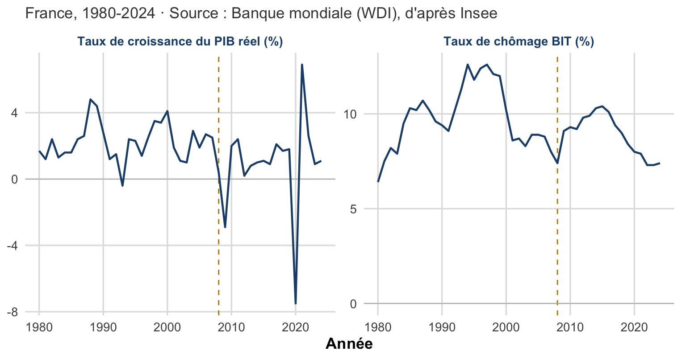
Chapitre I : Introduction à la politique économique
Rappels de croissance, horizons temporels et fondements de l’intervention publique
Résumé de cours : cinq faits marquants de la croissance, horizons CT/MT/LT, typologie des politiques économiques et trois fonctions de Musgrave (stabilisation, allocation, redistribution).
Objectifs du chapitre
- Distinguer PIB nominal, PIB réel, PIB par habitant et PIB par habitant en parité de pouvoir d’achat (PPA).
- Restituer les cinq faits marquants de l’histoire de la croissance économique.
- Différencier les horizons court terme (CT), moyen terme (MT) et long terme (LT) en macroéconomie.
- Définir la politique économique, la distinguer de l’économie politique, et situer ses fondements normatif/positif et néoclassique/keynésien.
- Appliquer la règle de Tinbergen et le carré magique de Kaldor à un arbitrage d’objectifs.
- Expliquer les trois fonctions de Musgrave (stabilisation, allocation, redistribution) et modéliser la stabilisation avec le cadre offre agrégée-demande agrégée (OA-DA).
Ce chapitre pose les bases conceptuelles du cours : pourquoi et comment les pouvoirs publics interviennent dans l’économie.1 Il part des rappels indispensables sur la mesure de la richesse (le PIB), retrace les grandes régularités empiriques de la croissance, distingue les horizons temporels pertinents en macroéconomie, puis construit la notion de politique économique : ses fondements théoriques, sa typologie et ses trois grandes fonctions.
La France a-t-elle connu, depuis 2008, une succession de crises ponctuelles ou une stagnation prolongée de la croissance et de l’emploi ? La figure ci-dessous, qui sera mobilisée tout au long du semestre, pose le décor.
Astuce
La ligne verticale marque le déclenchement de la crise financière de 2008. Croissance durablement faible et chômage élevé et persistant : c’est l’hypothèse de « stagnation séculaire » (R. Gordon, L. Summers), à garder en tête pour tout le semestre.
1. Rappels sur le PIB
Produit intérieur brut (PIB) : mesure de la richesse, c’est-à-dire de la quantité de biens et de services, créée sur un territoire donné au cours d’une période donnée (en général un trimestre ou une année).
Deux mesures du PIB doivent être distinguées, car elles ne captent pas les mêmes effets :
- PIB nominal : somme des quantités de biens et services finaux produits durant une période, valorisées à leur prix courant. Il combine un effet volume (plus de biens produits) et un effet prix (les biens sont plus chers).
- PIB réel : même somme, mais valorisée à prix constants (ceux d’une année de référence). Il isole le seul effet volume, ce qui en fait la mesure pertinente pour comparer l’activité économique dans le temps.
L’écart entre ces deux mesures se creuse mécaniquement avec l’inflation cumulée : c’est le « coin d’inflation », bien visible sur les données françaises depuis 1990.

Le PIB nominal croît plus vite que le PIB réel sur toute la période (× 2,7 contre × 1,6 entre 1990 et 2023) : l’écart traduit l’inflation cumulée. C’est pour isoler la seule création de richesse que le taux de croissance se calcule toujours sur le PIB réel.
Deux dérivés du PIB réel servent aux comparaisons internationales et sociales :
- PIB par habitant (ou par tête) : PIB réel rapporté à la population, indicateur usuel de niveau de vie moyen.
- PIB par habitant en PPA (parité de pouvoir d’achat) : le PIB par habitant corrigé des écarts de coût de la vie entre pays, ce qui permet de comparer le pouvoir d’achat réel plutôt que la seule valeur monétaire convertie au taux de change.
La correction PPA peut fortement modifier le classement des niveaux de vie mesurés, comme le montre la comparaison de quatre pays en 2022 :

La correction PPA rehausse fortement le niveau de vie mesuré de la Chine (+68 %) et surtout de l’Inde (+251 %), pays où le coût de la vie est bas, alors qu’elle change peu la position de la France et des États-Unis.
Le rythme de variation du PIB réel définit le taux de croissance économique :
\[ \text{Taux de croissance du PIB}_t = \frac{PIB_t - PIB_{t-1}}{PIB_{t-1}} \times 100 \]
Expansion, récession, dépression
- Expansion : période de croissance du PIB positive.
- Récession : croissance du PIB négative pendant au moins deux trimestres consécutifs.
- Dépression : baisse forte et prolongée de l’activité économique, une récession sévère et durable.
AvertissementErreur fréquente
Une croissance qui ralentit (par exemple qui passe de 3 % à 1 %) n’est pas une récession : le PIB continue d’augmenter, seul son rythme de progression diminue. La récession suppose une variation négative du PIB, pas seulement un ralentissement.
La figure suivante applique la règle des deux trimestres consécutifs aux deux récessions techniques les plus récentes en France.
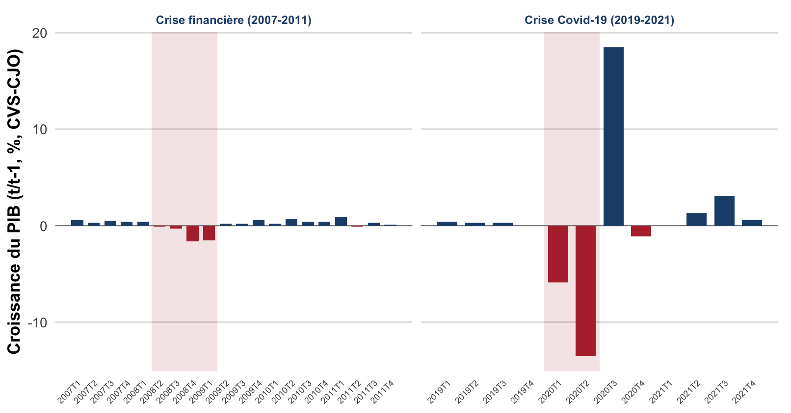
Les bandes grisées matérialisent la règle des deux trimestres consécutifs : 2008T2-2009T1 et 2020T1-T2 sont des récessions techniques. À l’inverse, 2020T4 est un trimestre isolé de croissance négative (encadré entre deux trimestres positifs) : ce n’est pas une récession au sens de la définition, la barre rouge unique le montre bien.
2. Cinq faits marquants de la croissance
L’observation de longue période fait apparaître cinq régularités empiriques qui structurent la réflexion sur la croissance et, en creux, sur le rôle de la politique économique.
1. La croissance soutenue est un phénomène historiquement récent. Le tableau ci-dessous résume la périodisation généralement retenue :
| Période | Caractéristiques |
|---|---|
| Avant 1800 (avant la révolution industrielle, 1760-1820) | Croissance très contrainte : économie agraire et artisanale, faible productivité. |
| 1800-1900 | Forte accélération portée par la révolution industrielle. |
| 1900-1950 | Croissance moyenne positive malgré les deux guerres mondiales. |
| 1950-1990 | Trente Glorieuses (1945-1973) : croissance forte, interrompue par les chocs pétroliers des années 1970. |
| 1990-aujourd’hui | Croissance plus faible, ponctuée de crises majeures (2008, crise des dettes souveraines de la zone euro en 2012, COVID-19 en 2020). |

Avant la révolution industrielle (1760-1820), le PIB mondial croît très lentement pendant des siècles ; il explose ensuite de façon quasi verticale sur une échelle logarithmique.
2. Une forte hausse du niveau de vie dans les pays de l’OCDE, surtout après 1950. Entre 1950 et 2022, le revenu par habitant a été multiplié par 3,8 aux États-Unis, par 4,7 en France, par 7,5 en Allemagne et par 12,5 au Japon, illustrant à la fois l’ampleur du phénomène et sa forte hétérogénéité entre pays pourtant tous développés.

Le multiplicateur varie considérablement d’un pays à l’autre : il dépasse 25 pour la Guinée équatoriale, Oman, la Corée du Sud ou le Botswana (rente pétrolière ou gazière, ou rattrapage industriel rapide), mais reste inférieur à 1 pour plusieurs pays d’Afrique subsaharienne (Liberia, Mozambique, République centrafricaine), où le revenu par habitant est aujourd’hui plus faible qu’en 1950. Cette hétérogénéité, bien plus large que celle observée entre les seules économies développées, illustre l’ampleur des trajectoires divergentes de croissance depuis 1950.
3. Une convergence inégale entre pays. Au sein de l’OCDE, un phénomène de rattrapage a permis aux pays initialement moins riches de réduire leur écart avec les États-Unis. À l’échelle mondiale, la convergence est plus sélective : elle est nette pour plusieurs pays asiatiques (Corée du Sud, Indonésie, Malaisie, Thaïlande, Chine), mais absente pour la plupart des pays d’Afrique subsaharienne et pour une partie de l’Amérique latine.
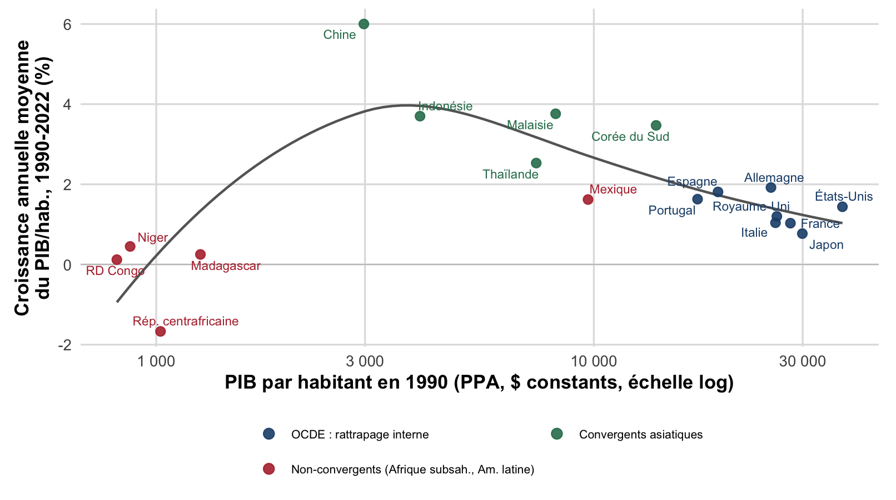
Les pays convergents (Chine, Corée du Sud, Indonésie, Malaisie, Thaïlande) partaient d’un niveau bas en 1990 et affichent la croissance la plus forte : ils rattrapent les pays riches. À niveau initial comparable, les pays non convergents (RD Congo, Niger, Rép. centrafricaine, Madagascar, Mexique) stagnent ou reculent : l’écart se creuse. Au sein de l’OCDE, la relation négative entre niveau initial et croissance (rattrapage) est plus ténue.
4. Un ralentissement du taux de croissance depuis les années 1970 dans les pays de l’OCDE. L’économie continue de croître, mais à un rythme moins soutenu, principalement en raison du ralentissement des gains de productivité.
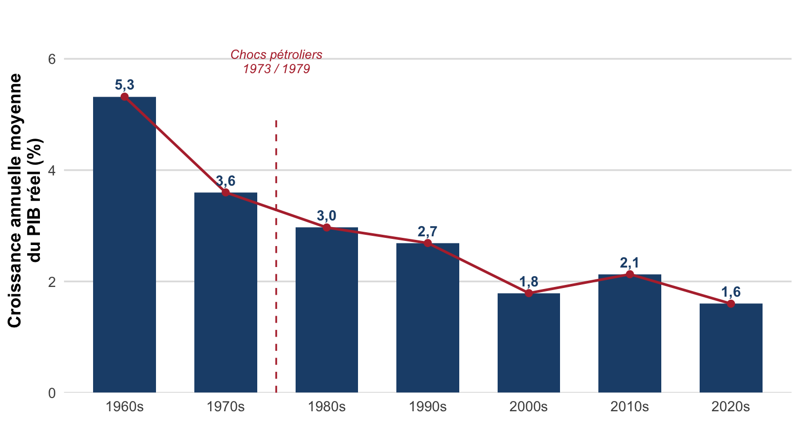
La croissance de l’OCDE reste positive sur toute la période, mais son rythme se réduit fortement après les chocs pétroliers de 1973 et 1979 (5,3 % en moyenne dans les années 1960 contre 1,8 % dans les années 2000) : c’est la baisse tendancielle des gains de productivité qui explique l’essentiel de ce ralentissement. La décennie 2020s (incomplète, 2020-2024) reste marquée par le choc Covid-19 de 2020.
5. Une évolution contrastée des inégalités : baisse des écarts de revenu entre pays, mais hausse des inégalités internes à de nombreux pays de l’OCDE, sous l’effet conjugué de la mondialisation, du changement technologique, de l’évolution du rôle de l’État et de la financiarisation de l’économie.
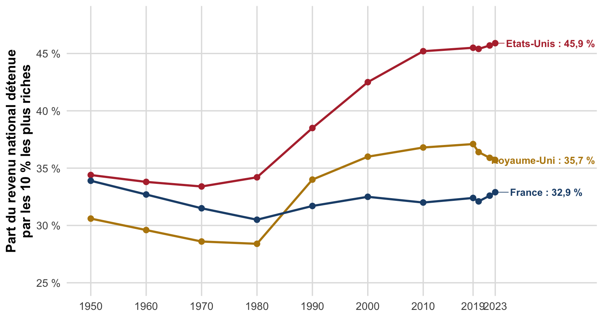
Depuis 1980, la part du revenu national captée par les 10 % les plus riches augmente fortement aux États-Unis (34 % à 46 % environ) et, dans une moindre mesure, au Royaume-Uni (28 % à 36 % environ), alors qu’elle reste comparativement stable en France (autour de 32-33 %) : la hausse des inégalités internes n’est ni uniforme, ni inévitable, elle dépend des choix nationaux (fiscalité, négociation salariale, régulation).
3. Les horizons temporels de la macroéconomie
La macroéconomie distingue trois horizons, qui ne mobilisent pas les mêmes déterminants et donc pas le même type de politique économique.
Court terme (CT) : quelques années. Les fluctuations de l’activité (variations du PIB autour de sa tendance) sont dominées par la demande (confiance des consommateurs, taux d’intérêt, etc.).
Moyen terme (MT) : une décennie ou moins. L’activité tend à revenir vers son niveau potentiel, déterminé par des facteurs d’offre. À cet horizon, le stock de capital, la technologie, le travail disponible et les institutions sont supposés quasi fixes.
Long terme (LT) : plusieurs décennies. Tous les facteurs deviennent variables. La croissance de long terme s’explique par les facteurs d’offre : accumulation du capital, progrès technique, ressources humaines (quantité et qualité de la main-d’œuvre).
Les trois figures suivantes illustrent ces horizons sur les mêmes données de PIB par habitant en France (Maddison Project Database, 2023).
Au court terme, les fluctuations de l’activité (croissance annuelle du PIB par habitant) sont dominées par des chocs de demande :
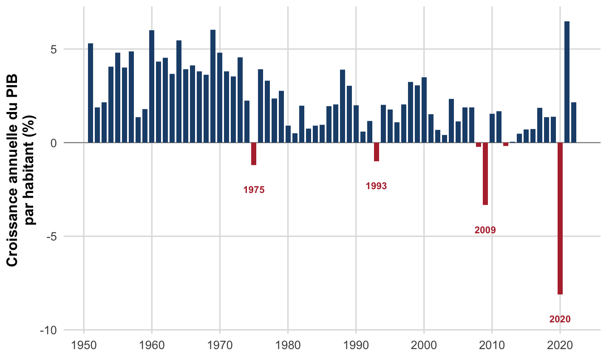
D’une année sur l’autre, le PIB par habitant fluctue nettement autour de sa tendance : ces à-coups (récessions en rouge) sont dominés par des chocs de demande (confiance, investissement, commerce extérieur), l’horizon du court terme.
Sur un horizon de moyen terme, l’activité s’écarte transitoirement de sa tendance (zones vertes au-dessus, rouges en dessous) avant d’y revenir :
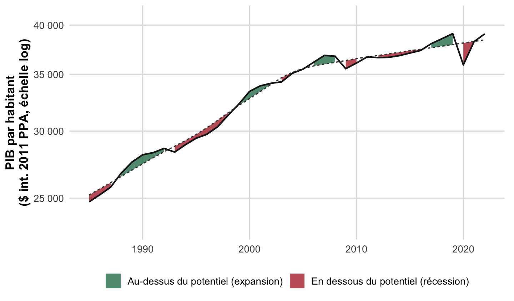
Les écarts à la tendance, positifs en vert (expansion de la fin des années 1990 et du milieu des années 2000) ou négatifs en rouge (récession du début des années 1990, crise de 2009, Covid-19 en 2020), ne persistent pas : l’activité revient vers son niveau potentiel en quelques années, l’horizon du moyen terme.
Au long terme, sur la même fenêtre et le même axe que la figure précédente, c’est la tendance elle-même, portée par l’offre, qui importe :
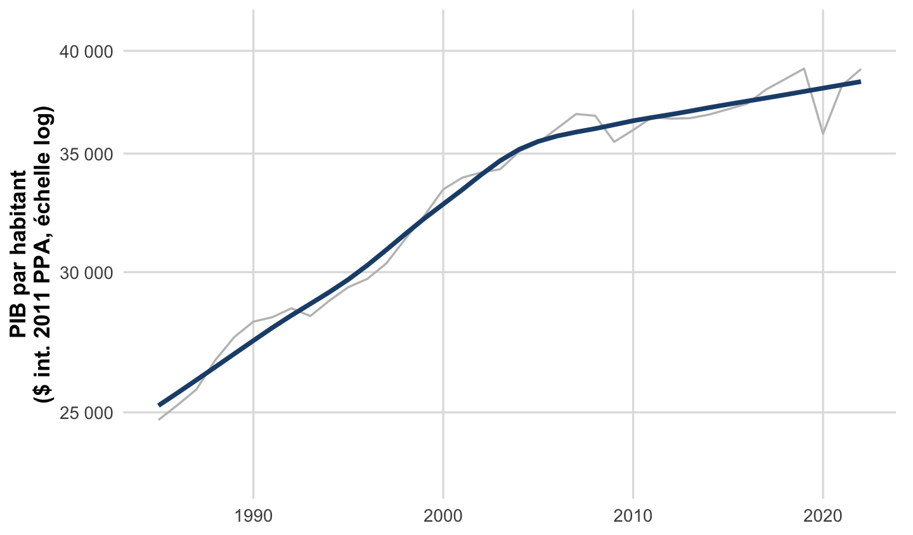
Sur la même fenêtre que la figure précédente, l’attention se déplace des cycles vers la tendance (en bleu) : sa pente, plus faible après les années 2000, reflète le ralentissement des gains de productivité (offre). À l’horizon long, ce sont ces déterminants d’offre, et non les écarts de moyen terme, qui comptent.
Cette distinction est structurante pour la suite du chapitre : les politiques de stabilisation agissent sur les fluctuations de court terme (via la demande), tandis que les politiques d’allocation agissent sur la trajectoire de moyen-long terme (via l’offre).
4. Vue d’ensemble de la politique économique
4.1 Définition
Politique économique : ensemble des interventions des pouvoirs publics visant à corriger les déséquilibres affectant l’économie nationale (récession, chômage, inflation, déficit ou excédent structurel de la balance des paiements, etc.), ou, de façon équivalente, ensemble des décisions prises par les pouvoirs publics pour atteindre des objectifs spécifiques (croissance, plein emploi, stabilité des prix, etc.) en mobilisant différents instruments.
Les « pouvoirs publics » regroupent ici l’État au sens strict, les banques centrales, les administrations locales et diverses agences spécialisées.
AvertissementErreur fréquente
Il ne faut pas confondre politique économique et économie politique. La politique économique est l’action des pouvoirs publics sur l’économie (l’objet de ce cours). L’économie politique est, historiquement, le nom donné à la science économique elle-même : l’étude des mécanismes de production, d’échange et de répartition des richesses.
4.2 Fondements
Pourquoi mettre en œuvre une politique économique ? La réponse dépend d’abord de l’approche retenue :
- Approche normative : cherche à définir ce qui devrait être : les bons objectifs que le gouvernement devrait poursuivre (croissance, plein emploi, etc.).
- Approche positive : s’efforce d’expliquer ce qui est : les objectifs et contraintes qui façonnent réellement les politiques menées.
Elle dépend ensuite de la théorie économique mobilisée. Deux grandes visions s’opposent traditionnellement :
La théorie néoclassique (vision libérale) part de l’idée que la libre concurrence assure un équilibre général qui ne peut être perturbé que par des chocs exogènes imprévisibles. Les acteurs et les marchés s’adaptent à ces chocs de façon à restaurer spontanément l’équilibre : tout déséquilibre est donc temporaire. Cette vision recommande des politiques d’offre (lever les entraves à la concurrence, ne pas freiner les ajustements spontanés des marchés, ne pas altérer les incitations à travailler et à épargner) et privilégie une intervention limitée de l’État.
La vision keynésienne défend au contraire une politique de demande, plus interventionniste. Pour Keynes, la plupart des marchés ne fonctionnent pas comme une Bourse assurant un équilibre automatique par l’ajustement instantané des prix. L’État doit donc intervenir pour réguler le niveau de la demande, afin d’éviter à la fois l’enlisement de l’économie dans une récession et son emballement dans une surchauffe inflationniste. La fonction essentielle de la politique macroéconomique est, dans cette optique, de maintenir l’activité à un niveau assurant le plein emploi.
Note
Ces deux visions seront retravaillées en détail à la section 5.1, à travers le modèle offre agrégée-demande agrégée (OA-DA), puis approfondies au chapitre II pour l’analyse du marché du travail.
4.3 Typologie des politiques économiques
Les politiques économiques peuvent être classées selon plusieurs critères.
Selon l’horizon temporel
- Politique conjoncturelle : vise à rétablir à court terme les grands équilibres macroéconomiques (plein emploi, croissance, stabilité des prix, équilibre extérieur). Elle agit principalement sur la demande. Exemples : politique budgétaire (subventions aux entreprises en difficulté), politique monétaire (facilités de crédit, taux préférentiels).
- Politique structurelle : vise à modifier durablement le cadre institutionnel et les contraintes qui régissent le fonctionnement des marchés. Elle agit principalement sur l’offre, à long terme, pour accroître le niveau de production potentiel du pays. Exemples : réformes du marché du travail, régulation de la concurrence et du système financier, aménagement du territoire, réforme du système éducatif et de santé, investissement dans l’innovation et la recherche.
flowchart TD
A[Politique economique] --> B[Politique conjoncturelle]
A --> C[Politique structurelle]
B --> B1[Court terme]
B --> B2[Agit via la demande]
B --> B3[Ex. politique budgetaire, politique monetaire]
C --> C1[Long terme]
C --> C2[Agit via offre]
C --> C3[Ex. marche du travail, education, recherche]
D’autres critères de classement sont usuels :
- Selon l’instrument : politique budgétaire, politique monétaire, politique de change.
- Selon le secteur économique visé : politique commerciale, politique industrielle, politique agricole, politique culturelle, etc.
Le carré magique de Kaldor est un outil visuel synthétisant quatre objectifs macroéconomiques usuels sur un diagramme à quatre axes (un losange) : taux de croissance du PIB, taux de chômage, taux d’inflation et solde extérieur (les axes de chômage et d’inflation étant conventionnellement inversés, pour que « plus grand » signifie toujours « mieux »). Plus la surface obtenue est grande et proche d’un carré régulier, meilleure est jugée la situation macroéconomique du pays.
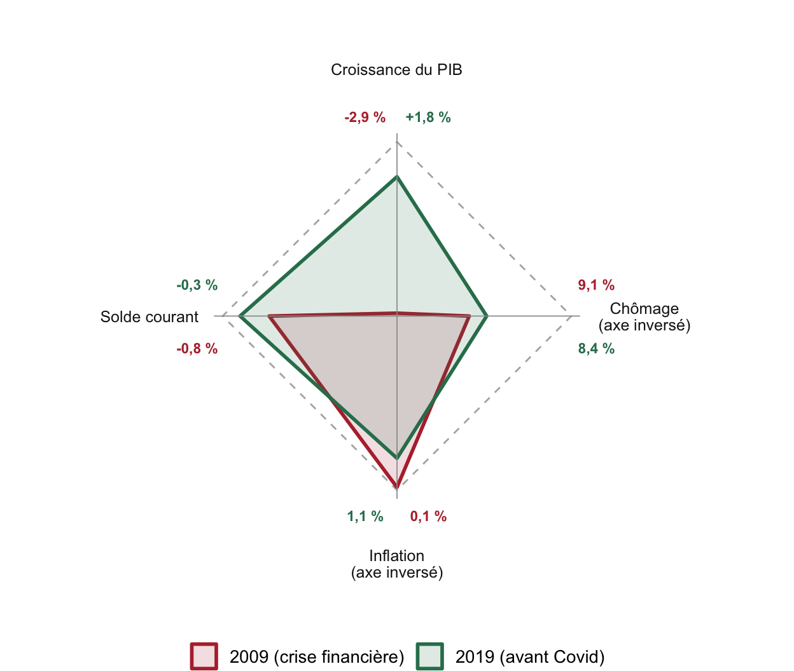
ImportantÀ retenir
Il est impossible d’optimiser simultanément les quatre objectifs du carré magique : les pouvoirs publics doivent arbitrer. Deux relations empiriques, approfondies au chapitre II, rendent ces arbitrages explicites :
- la courbe de Phillips (Phillips 1958), relation négative entre inflation et chômage ;
- la loi d’Okun (Okun 1962), relation positive entre croissance et emploi (donc négative avec le chômage).
Depuis les années 1990, un cinquième objectif s’est ajouté à ce carré : la soutenabilité de la dette publique.
4.4 Objectifs et instruments
La politique économique confronte souvent les gouvernements à des objectifs difficiles à rendre compatibles simultanément : favoriser la croissance, maintenir le plein emploi et limiter l’inflation.
Règle de Tinbergen : pour poursuivre \(n\) objectifs de politique économique indépendants, il faut disposer d’au moins \(n\) instruments indépendants.
Par exemple, réduire l’inflation (via une politique monétaire restrictive) et faire baisser le chômage (via une politique budgétaire expansionniste) nécessite de combiner deux instruments distincts, ce que l’on appelle un policy-mix. Lorsque les instruments disponibles sont insuffisants au regard du nombre d’objectifs, les pouvoirs publics doivent procéder à un arbitrage coûts-bénéfices entre objectifs concurrents.
5. Les trois fonctions de la politique économique (Musgrave)
À la suite de Richard Musgrave (Musgrave 1959), on distingue traditionnellement trois grandes fonctions de la politique économique :
- Stabilisation (conjoncturelle) : limiter les fluctuations de l’activité autour de sa tendance de long terme (réduire l’output gap, ou écart de production).
- Allocation (structurelle) : élever la trajectoire de la croissance potentielle.
- Redistribution (structurelle) : ajuster le partage des richesses au sein de la société (équité).
La redistribution se distingue nettement des deux autres fonctions, puisqu’elle vise le partage du revenu plutôt que son niveau. Allocation et stabilisation influencent quant à elles toutes deux le niveau de l’activité économique, mais à des horizons différents : les politiques d’allocation cherchent à accroître le niveau maximal de production atteignable sans tension inflationniste (la production potentielle), tandis que les politiques de stabilisation cherchent à minimiser l’écart entre production effective et production potentielle.
flowchart TD
M[Trois fonctions de Musgrave] --> S[Stabilisation]
M --> AL[Allocation]
M --> R[Redistribution]
S --> S1[Court terme]
S --> S2[Reduit les fluctuations autour du potentiel]
AL --> AL1[Moyen-long terme]
AL --> AL2[Eleve la croissance potentielle]
R --> R1[Tous horizons]
R --> R2[Ajuste le partage des richesses - equite]
5.1 La stabilisation
Deux visions s’opposent sur la nécessité (et l’efficacité) de la stabilisation à court terme.
L’économie de l’offre (vision néoclassique) repose sur l’idée que le marché s’autorégule via l’ajustement automatique des prix, des salaires et des taux d’intérêt : tout déséquilibre entre offre et demande se résorbe donc rapidement. Cette vision s’appuie sur la loi des débouchés de Jean-Baptiste Say : « toute offre crée sa propre demande », la production génère des revenus, qui génèrent de la demande, la flexibilité des prix assurant l’égalisation de l’offre et de la demande. Dans ce cadre, le chômage est volontaire : les individus choisissent de ne pas travailler au salaire de marché proposé. Il n’y a donc pas de problème de débouchés, et les politiques visant à stimuler la demande ne font, selon cette vision, que créer de l’inflation sans effet durable sur la production. Pour augmenter la richesse produite, il faut agir sur l’offre.
L’économie de la demande (vision keynésienne) soutient au contraire que le marché ne peut pas s’autoréguler et que l’État doit intervenir pour neutraliser les fluctuations de l’économie. Trois arguments justifient cette absence d’autorégulation :
- La rigidité des prix et des salaires : à court terme, un déséquilibre entre offre et demande ne se résorbe pas par un ajustement des prix mais par un ajustement des quantités, production et emploi. Un choc négatif se traduit ainsi par une baisse de la production et de l’emploi, non par une simple baisse des prix.
- La préférence pour la liquidité : la monnaie est recherchée pour sa valeur refuge. Lorsque la conjoncture se dégrade, l’épargne liquide augmente (les ménages consomment moins, les entreprises investissent moins), ce qui retire des ressources du circuit économique : la demande devient inférieure à l’offre, ce qui contracte l’économie.
- L’incertitude et les anticipations : le monde économique changeant en permanence, les agents doivent former des anticipations, dépendantes de leur ressenti (optimiste ou pessimiste). La production des entreprises n’est pas calée sur l’offre disponible de travail et de capital, mais sur la demande anticipée. Une anticipation de demande insuffisante entraîne une adaptation à la baisse de l’offre, ce qui peut enfermer l’économie dans un équilibre de sous-emploi durable.
flowchart LR
A[Rigidites des prix et salaires] --> D[Demande effective insuffisante]
B[Preference pour la liquidite] --> D
C[Anticipations pessimistes] --> D
D --> E[Production ajustee a la baisse]
E --> F[Emploi en baisse]
F --> G[Chomage involontaire]
L’implication de cette analyse est que l’État doit mener une politique stabilisatrice (contra-cyclique), assurant le plein emploi sans provoquer de surchauffe inflationniste, c’est-à-dire stabiliser la demande à la hausse ou à la baisse autour du niveau correspondant aux capacités de production de l’économie (le PIB potentiel).
Le modèle offre agrégée-demande agrégée (OA-DA)
Le cadre OA-DA (ou AS-AD en anglais) formalise ces deux visions. Il relie le niveau général des prix \(P\) à la production \(Y\) à travers deux relations :
- Offre agrégée (OA) : relation entre le niveau des prix et la quantité produite par les entreprises.
- À court terme (optique keynésienne) : en présence de rigidités nominales, une hausse des prix réduit le salaire réel (\(w = W/P\)) et rend la production plus profitable, la relation est donc croissante.
- À long terme (optique néoclassique) : les prix s’ajustent pour équilibrer l’offre à la demande au niveau de plein emploi des facteurs de production. La production est alors à son niveau potentiel \(Y^*\) : la courbe d’offre est verticale, car l’offre ne peut répondre à une hausse de la demande par une hausse des quantités produites, toute hausse de la demande se traduit alors uniquement par une hausse des prix.
- Demande agrégée (DA) : relation entre le niveau des prix et la demande globale de biens et services, décroissante à court comme à long terme. Une hausse du niveau général des prix réduit la valeur réelle de la richesse détenue par les ménages (effet de richesse négatif), ce qui entraîne une baisse de la consommation.
L’intérêt de ce cadre est de permettre de comprendre le rôle (et les limites) des politiques de stabilisation. Une relance budgétaire et/ou monétaire permet de compenser les effets d’un choc négatif de demande, en deux temps : d’abord l’effet du choc lui-même, puis l’effet correcteur de la politique de relance. Symétriquement, une politique restrictive vise à ramener la demande à un niveau plus faible lorsque l’économie est en surchauffe, afin de retrouver la production potentielle et la stabilité des prix. L’efficacité de ces politiques de demande dépend de la pente de la courbe d’offre à court terme : plus les rigidités nominales sont fortes (salaires répondant lentement au marché du travail), plus la courbe d’OA à court terme est plate, et plus une politique de demande a d’effet sur la production (avec une faible hausse des prix).
Le modèle permet de représenter quatre grandes catégories de chocs conjoncturels, qui se classent d’abord par leur origine (demande ou offre), puis par leur signe :
flowchart TD
A[Choc conjoncturel] --> B[Choc de demande]
A --> C[Choc d offre]
B --> B1[Positif - Y et P augmentent]
B --> B2[Negatif - Y et P diminuent]
C --> C1[Positif - Y augmente P diminue]
C --> C2[Negatif - Y diminue P augmente - stagflation]
- Choc d’offre négatif (ex. : choc pétrolier, hausse du prix du pétrole) : la courbe d’OA de court terme se déplace vers le haut/la gauche ; production en baisse, prix en hausse (stagflation).
- Choc d’offre positif (ex. : innovation technologique majeure réduisant les coûts de production) : la courbe d’OA de court terme se déplace vers le bas/la droite ; production en hausse, prix en baisse.
- Choc de demande négatif (ex. : crise financière réduisant la richesse des ménages et donc leur consommation) : la courbe de DA se déplace vers la gauche/le bas ; production et prix baissent tous deux.
- Choc de demande positif (ex. : forte hausse du prix des actifs financiers, augmentant la richesse des ménages) : la courbe de DA se déplace vers la droite/le haut ; production et prix augmentent tous deux.
Les quatre panneaux ci-dessous illustrent chacun de ces cas à partir du même équilibre de départ \(E_0\) (production à son potentiel \(Y^*\)) : en bleu la courbe qui reste fixe (OA de court terme pour les chocs de demande, DA pour les chocs d’offre), en vert la seconde courbe fixe de référence, en rouge la courbe qui se déplace sous l’effet du choc, jusqu’au nouvel équilibre \(E_1\).
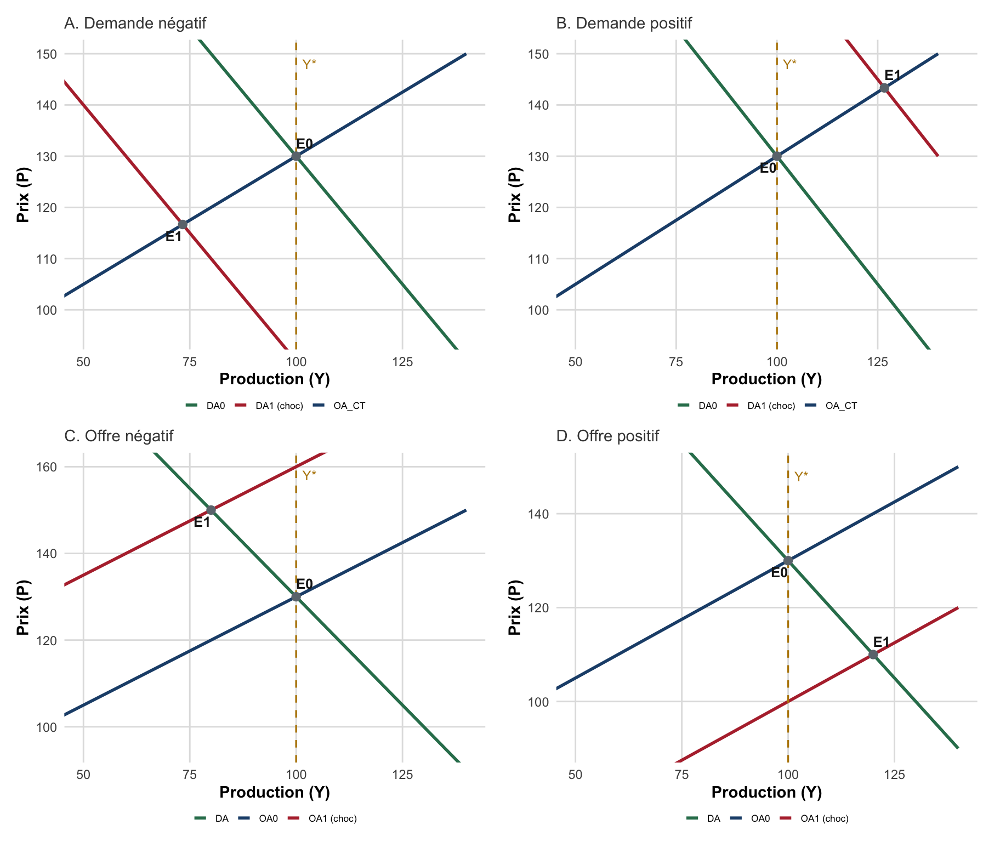
ImportantÀ retenir
Dans le modèle OA-DA, un choc de demande déplace la courbe de DA et fait varier conjointement production et prix dans le même sens (les deux baissent, ou les deux augmentent). Un choc d’offre déplace la courbe d’OA de court terme et fait varier production et prix en sens opposés (stagflation en cas de choc négatif). La politique de stabilisation agit sur la position de la courbe de DA pour ramener la production vers \(Y^*\).
Une illustration empirique : le double choc pétrolier français
Le choc d’offre négatif n’est pas qu’une construction théorique : la France en a fait l’expérience à deux reprises dans les années 1970, à la suite de l’embargo pétrolier d’octobre 1973 puis de la révolution iranienne de 1979.
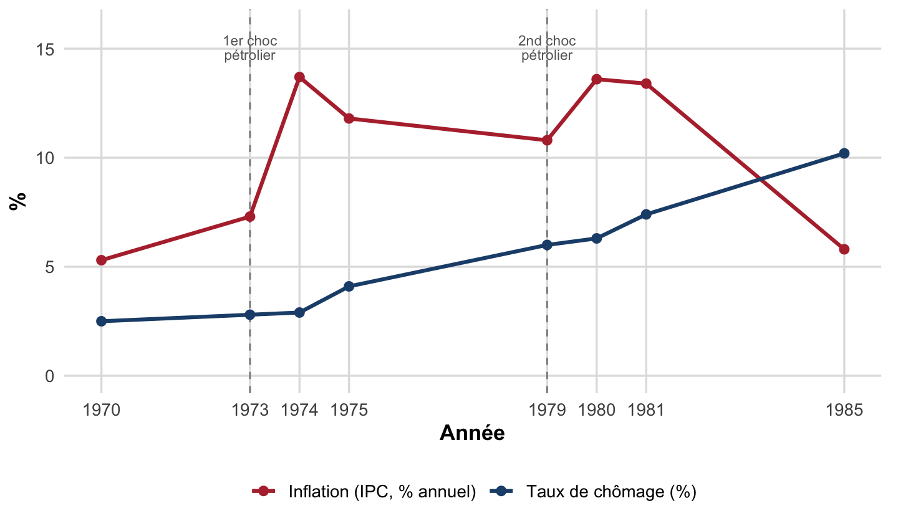
ImportantValidation empirique
Contrairement à la courbe de Phillips « naïve » (inflation et chômage en sens opposé), les deux chocs pétroliers montrent inflation et chômage grimper ensemble : c’est la signature d’un choc d’offre négatif, exactement ce que prédit le modèle OA-DA.
Ce diagnostic se généralise : en croisant simplement le signe de la croissance et celui de l’inflation, on peut identifier la nature d’un choc conjoncturel sans modèle économétrique. Trois années françaises illustrent ce test dans le plan croissance-inflation : une année calme (2019), un choc de demande (2009, crise financière) et un choc d’offre (1975, premier choc pétrolier).
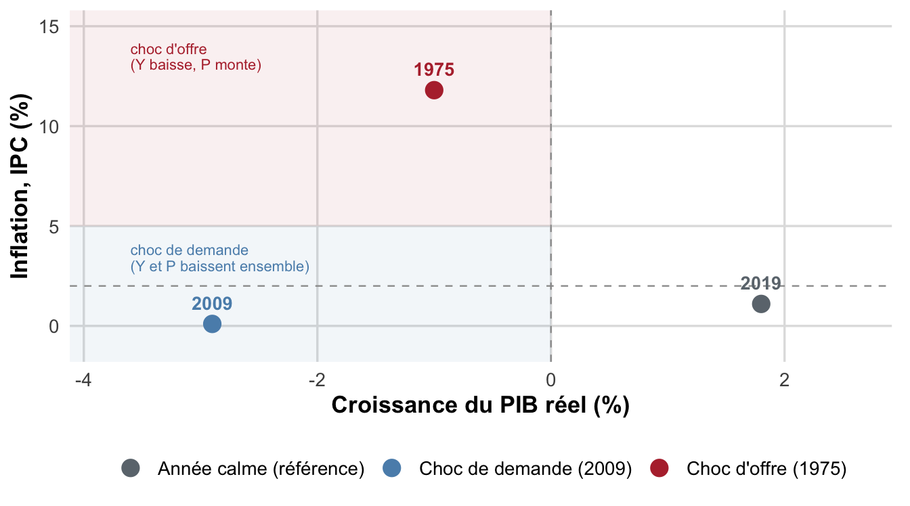
En 2009, production et prix chutent ensemble (choc de demande, quadrant bas-gauche). En 1975, la production chute mais l’inflation reste élevée (choc d’offre, quadrant haut-gauche) : un simple coup d’œil au signe conjoint des deux variables permet de diagnostiquer la nature du choc.
5.2 L’allocation
La fonction d’allocation vise à élever la trajectoire de la croissance potentielle de l’économie, c’est-à-dire à agir sur les déterminants de long terme identifiés à la section 3 : accumulation du capital, progrès technique, quantité et qualité des ressources humaines. Contrairement à la stabilisation, qui cherche à réduire l’écart entre production effective et production potentielle, l’allocation cherche à déplacer le niveau de production potentielle lui-même.
Les instruments mobilisés relèvent typiquement des politiques structurelles évoquées en 4.3 : investissement dans l’éducation et la formation, soutien à la recherche et à l’innovation, régulation de la concurrence pour favoriser l’efficacité productive, réformes du marché du travail, développement des infrastructures. Cette fonction sera retravaillée en détail dans les chapitres II et III, à travers l’analyse du marché du travail et des politiques de l’emploi.
5.3 La redistribution
La fonction de redistribution vise à ajuster le partage des richesses produites au sein de la société, indépendamment de leur niveau. Elle repose sur des jugements de valeur relatifs à l’équité, ce qui la distingue nettement de la stabilisation et de l’allocation, plus directement rattachées à l’efficacité économique.
Les instruments usuels de la redistribution sont la fiscalité progressive, les transferts sociaux (prestations, minima sociaux, assurance chômage) et les services publics universels (santé, éducation). L’arbitrage entre efficacité et équité (un système très redistributif pouvant réduire les incitations à travailler ou à investir) est une question récurrente de la politique économique, retravaillée notamment au chapitre III à propos des trappes à inactivité.
AstucePour aller plus loin : quelle conception de la justice sociale ?
Le choix du degré de redistribution souhaitable dépend d’une conception philosophique de la justice sociale, sur laquelle la théorie économique ne tranche pas seule. Plusieurs traditions coexistent dans le débat : la vision utilitariste (maximiser la somme des utilités individuelles), la vision rawlsienne (maximiser la situation des plus défavorisés, derrière un « voile d’ignorance »), la vision d’Amartya Sen (raisonner en termes de capacités réelles des individus plutôt que de seul revenu) et la vision libertarienne (limiter la redistribution au nom des droits de propriété individuels). Ce débat dépasse le cadre de ce cours mais éclaire pourquoi la fonction de redistribution reste, davantage que les deux autres, une question de choix de société.
AstucePour aller plus loin : l’économie est-elle une science ?
Ce chapitre a présenté deux fondements théoriques concurrents (néoclassique et keynésien) sans les départager. Cette pluralité pose une question épistémologique classique : l’économie est-elle une science au même titre que la physique ou la médecine ?
Deux positions illustrent ce débat. Pour Bernard Guerrien (Guerrien 2004), la scientificité de l’économie est fragile : nombre de modèles orthodoxes, construits sur des hypothèses très éloignées de la réalité (concurrence parfaite, agent représentatif), ne produisent pas de prédictions réellement testables, et la posture du « comme si » (faire comme si les hypothèses irréalistes étaient vraies, du moment que les conclusions semblent correctes) fragilise la démarche de réfutation propre à une science empirique.
À l’inverse, Pierre Cahuc et André Zylberberg (Cahuc et Zylberberg 2016) défendent que l’économie est bien une science, au même titre que la médecine : elle repose sur la critique par les pairs (publication après évaluation par des chercheurs confirmés) et, depuis deux à trois décennies, sur des méthodes expérimentales à grande échelle (groupes test/contrôle) permettant d’identifier des relations de cause à effet, réduisant la part de l’opinion dans le débat de politique économique.
Retenez de ce débat une leçon méthodologique simple, utile pour tout le cours : la valeur d’un résultat économique dépend du réalisme de ses hypothèses et de sa confrontation aux données, un point à garder en tête chaque fois qu’un modèle sera mobilisé pour justifier une politique économique.
Synthèse du chapitre
- Le PIB réel (et ses dérivés par habitant, en PPA) est la mesure de référence de l’activité et du niveau de vie ; sa croissance a été historiquement récente, inégalement répartie entre pays, et marquée par un ralentissement depuis les années 1970.
- Trois horizons temporels (CT/MT/LT) organisent l’analyse macroéconomique et déterminent le type de politique pertinent : stabilisation à court terme (demande), allocation à moyen-long terme (offre).
- La politique économique se définit par ses fondements (normatif/positif, néoclassique/keynésien), sa typologie (conjoncturelle/structurelle, par instrument, par secteur) et la contrainte de la règle de Tinbergen (autant d’instruments que d’objectifs).
- Musgrave distingue trois fonctions (stabilisation, allocation, redistribution) dont la première se formalise avec le modèle OA-DA : les chocs de demande déplacent conjointement production et prix ; les chocs d’offre les déplacent en sens opposés.
Les références
Cahuc, Pierre, et André Zylberberg. 2016. Oui, l’économie est une science. Interview, L’Express-L’Expansion. https://lexpansion.lexpress.fr/actualite-economique/oui-l-economie-est-une-science_1825645.html.
Guerrien, Bernard. 2004. « Y a-t-il une science économique ? » L’Économie politique, nᵒ 22: 97‑109.
Musgrave, Richard A. 1959. The Theory of Public Finance. McGraw-Hill.
Okun, Arthur M. 1962. « Potential GNP: Its Measurement and Significance ». Proceedings of the Business and Economic Statistics Section, 98‑104.
Phillips, A. W. 1958. « The Relation between Unemployment and the Rate of Change of Money Wage Rates in the United Kingdom, 1861–1957 ». Economica 25 (100): 283‑99.
Notes de bas de page
Ce résumé s’appuie sur les enseignements de C. Mathonnat (2018-2019) et M. Ouedraogo (2025-2026).↩︎